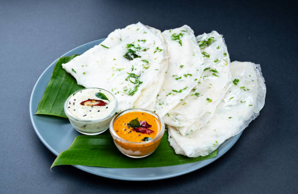
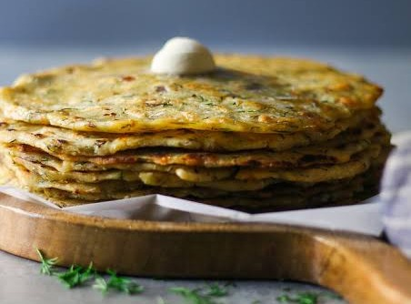
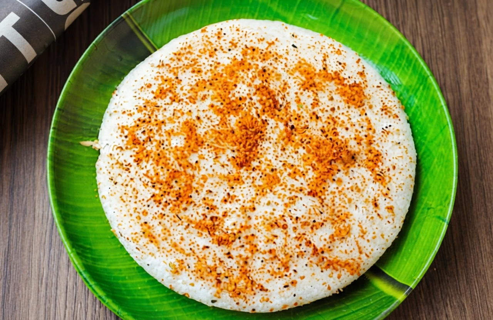
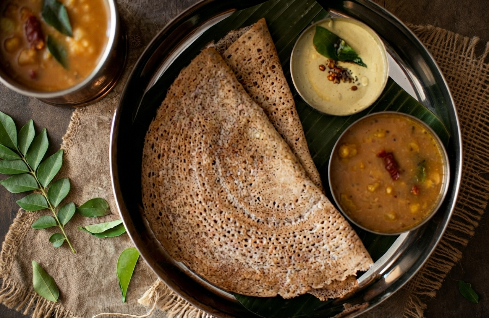

Neer Dosa
Neer Dosa is a light, unfermented rice crepe from coastal Karnataka (Mangaluru & Udupi). Made from a thin water batter, it is traditionally served with coconut chutney, vegetable saagu, or fish and chicken curries.
Ingredients
- 2 cups raw rice (sona masoori or parboiled)
- 4 cups water (for soaking + grinding)
- 1 tsp salt
- Oil or ghee (for cooking)
Instructions
- Wash rice thoroughly and soak in 3 cups water for 4-6 hours.
- Drain water and grind rice with 1 cup fresh water into a smooth, thin batter. Add salt.
- Heat a non-stick tawa on medium heat. Pour a ladleful of batter and swirl quickly to form a thin crepe.
- Drizzle oil/ghee around edges. Cook until bottom is lightly golden (no flipping needed).
- Fold or roll and serve hot with coconut chutney, saagu, or curry.

Akki Rotti
Akki Rotti is a traditional Karnataka rice-flour flatbread mixed with vegetables and spices. Cooked until crisp on the outside and soft inside, it is commonly served for breakfast with coconut chutney, chutney powder, or vegetable curry.
Ingredients
- 2 cups rice flour
- 1 cup finely chopped onions
- 2 green chillies, chopped
- 2 tbsp grated coconut
- 2 tbsp chopped coriander leaves
- 1 tsp cumin seeds
- Salt to taste
- Water (as needed)
- Oil (for cooking)
Instructions
- Mix rice flour, onions, chillies, coconut, coriander, cumin, and salt in a bowl.
- Gradually add water and knead into a soft dough (not sticky).
- Take a lemon-sized ball, place on oiled plastic sheet, and flatten evenly with wet fingers.
- Carefully invert onto a hot tawa. Peel off plastic gently.
- Drizzle oil around edges. Cook on medium heat until golden brown on both sides.
- Serve hot with coconut chutney or pickle.

Mysore Masala Dosa
Mysore Masala Dosa is a famous Karnataka breakfast featuring a crisp, golden crepe lined with signature spicy red chutney and stuffed with flavorful spiced potatoes.
Ingredients
- 2 cups dosa batter (rice & urad dal)
- 3 medium potatoes, boiled & mashed
- 1 onion, finely chopped
- 2 tbsp mysore red chutney paste
- 1 tsp mustard seeds
- Curry leaves, turmeric, salt
- Ghee or oil for roasting
Instructions
- Temper mustard seeds and curry leaves in oil. Add onions and sauté until translucent.
- Add mashed potatoes, turmeric, salt, and mix well. Let cool.
- Spread dosa batter thinly on a hot tawa. Drizzle ghee around edges.
- Once crisp, spread a layer of mysore red chutney on the inner side.
- Place potato filling in the center, fold or roll, and serve immediately with sambar and chutney.

Thatte Idli
Thatte Idli is a soft, oversized, plate-shaped steamed rice cake popular across Karnataka, traditionally served with coconut chutney and sambar.
Ingredients
- 3 cups idli rice
- 1 cup urad dal
- 1 tsp fenugreek seeds
- Salt to taste
- Water for grinding
Instructions
- Soak rice and urad dal separately for 6-8 hours with fenugreek seeds in dal.
- Grind dal to fluffy batter and rice to smooth batter. Mix together with salt.
- Ferment overnight in a warm place until doubled in volume.
- Pour batter onto greased thatte idli plates (flat steel plates).
- Steam in an idli cooker or large vessel for 12-15 minutes until cooked through.
- Serve hot with coconut chutney and sambar.

Ragi Dosa
Ragi Dosa is a wholesome, nutrient-rich, and naturally gluten-free Karnataka breakfast made with finger millet flour (ragi), giving it a distinctive earthy flavor.
Ingredients
- 1 cup ragi flour (finger millet)
- ½ cup rice flour
- 2 tbsp finely chopped onions
- 1 green chilli, chopped
- 2 tbsp chopped coriander
- 1 tsp cumin seeds
- Salt to taste
- Water (to make thin batter)
- Oil or ghee for cooking
Instructions
- Mix ragi flour, rice flour, onions, chilli, coriander, cumin, and salt in a bowl.
- Gradually add water while mixing to form a thin, pourable batter (no lumps).
- Let the batter rest for 15-20 minutes.
- Heat a tawa on medium-high. Pour batter from a height in a circular motion to create holes.
- Drizzle oil around edges. Cook until crispy and golden brown.
- Serve hot with coconut chutney or tomato chutney.